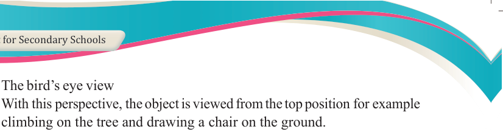
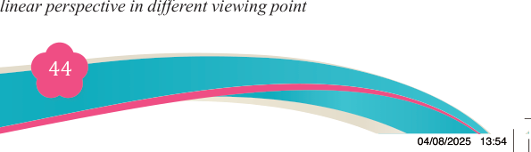
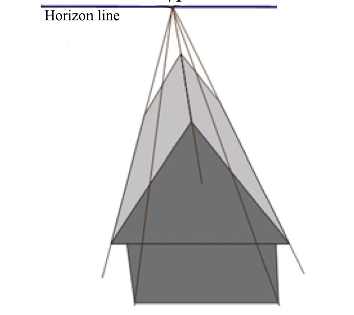
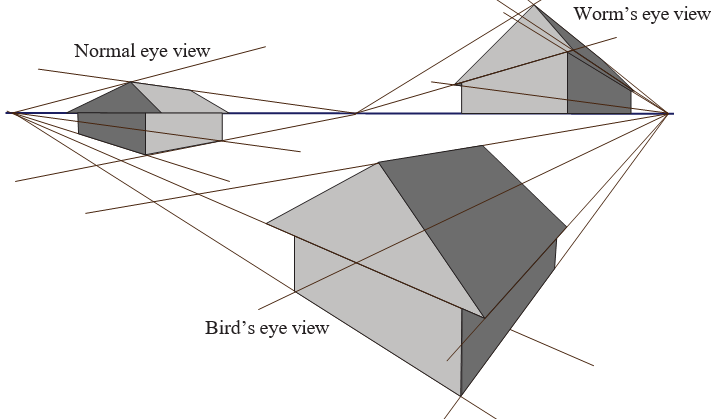

(i) The bird’s eye view

With this perspective, the object is viewed from the top position for example
climbing on the tree and drawing a chair on the ground.
(ii) The worm’s eye view
This involves viewing the object from a low position, for example, lying-down flat and draw a tree; and
(iii) The normal eye view
With this perspective, the observer stands on the ground and draws a tree.
Regardless of the type of the perspective chosen, an artist can compose it by
manipulating these three views. For example, one- point linear perspective can be
composed in any of the three views and the same thing will happen in the other types of perspectives. Observe Figures 3.11, 3.12 and 3.13.
(a) One-point linear perspective

Figure 3.11: One-point linear perspective
(b) Two-point linear perspective

Figure 3.12: Two-point linear perspective in different viewing point
vanishing point